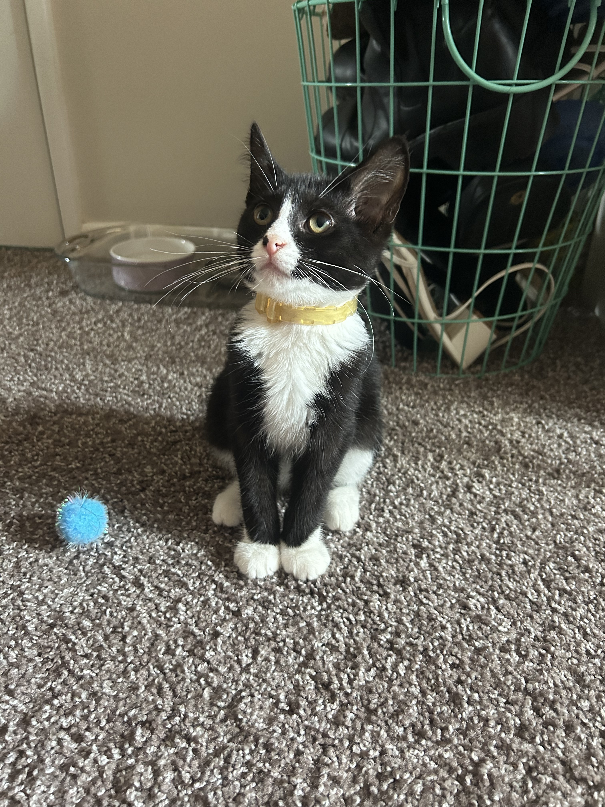

Bacon Q Dog

Bacon Q. Dog is a 9yr old labradoodle. He prefers to spend his days lounging among the three different beds/couches that his family has gifted him. He enjoys a walk or two around the neighborhood, as long as he can pretend that he doesn't see any of the other animals to avoid the embarrassment of not wanting to admit he has no wolf-like skills in chasing them.
At night just as the rest of the family is ready to relax, Bacon suddenly wants to release all of his energy. He will place his toys on a mini couch and frantically drag the couch around, giving his toys "a ride." There is also a lot of rolling. Lots and lots of rolling.
Photo Gallery


Likes
- Belly rubs
- Playing tug-of-war
- Sneaking onto the couch
Cooper

Cooper is an 8yr old border collie and lab mix. We rescued him from the Humane Society as a puppy! He loves going on long walks/runs, but he stops to sniff something every few steps. He’s pretty friendly, but he loves to loudly bark at delivery people who ring the doorbell.
Whenever it’s movie night, Cooper has to join on the couch/bed or he feels left out. He loves to cuddle and pats on his tummy. Cooper will play fetch for about 2 or 3 rounds, but he quickly gets bored. He leaves his toys all around the house for the rest of the family to find.
Photo Gallery


Likes
- Peanut Butter
- Going on long walks
- Sleeping
Jingle

Jingle loves going outside. He used to be an outdoor/indoor cat until we realized that he loved to get injured. Now, we take him on walks with a leash which he loves! Every time he sees me carrying the leash he goes crazy and meows to go out.
Jingle is very mischievous, he has gotten into many different accidents. His first accident was outside; a bee stung his paw and he cried all night long. The second one was ALSO outside, he got stuck on a tree for four days. Finally, he came back home one day with his tail bleeding and ripped out.
Photo Gallery


Likes
- Going on walks
- Being pet
- Eating treats
Hachi

Hachi is a 13 year old Akita. He is a very old boy who likes to play in snow and run laps around our yard. He is super nice and never bites. He is timid but friendly and will always come and greet visitors with a smile and a few barks.
Hachi is a jealous dog. Although shy, he does not like it when other dogs steal attention from him and he will lightly bite them. When Hachi shared the house with another dog, a small poodle, he would constantly bicker with the poodle when it was being loud.
Photo Gallery


Likes
- Snow
- Being around people
- Eating human food
Cheeto

Cheeto is a cat who likes to eat a lot and play a lot. He has an obsession with his grandpa (human) and tries to get outside every single day. If he isn’t causing problems, he is usually hiding in a seven foot tall cat tree and sleeping.
Another name for Cheeto is Chicken, because sometimes he sits very scrunched up and ends up looking like a rotisserie chicken. He was nicknamed this by one of his friends, and now he understands it as his own name. He is about six years old and still acts like a younger cat, despite being middle-aged.


Likes
- Treats
- Exploring
- My Dad
Bonus: Milktea

Milktea is a Scottish fold with a personality of a princess. She loves her veggies and refuses to eat anything dropped on the ground. She makes it clear when she has a demand of any sort by complaining in a loud, distinguished manner. If what she says could be translated, it probably would be, “This is atrocious, the water container has been empty for the 3rd time this week. I want to see the manager.”
Despite her cuteness and royalty, she actually suffers from a genetic disorder intentionally brought upon by humans. I highly advise against keeping a Scottish fold because they are in constant pain when they reach around 2 years old. Cartilage accumulates around her paw joints and tail joints and it becomes painful for them to even walk. She is living evidence of human’s cruelty of breeding animals to look pretty while sacrificing the animals’ health.


Likes
- Individual corn kernels
- Sitting on suitcases
- Being alone
Bonus: Jax
Jax is a kitten, about five months old that I found this summer at a gas station while traveling to Marquette, Michigan. He was scared and malnourished, crying in the parking lot. I took him with me and after some healthy meals and a trip to the vet he is doing great!
My roommates and I just recently moved and Jax has been having a hard time getting used to the large house since we were previously living in a small apartment. Jax is incredibly playful and loves to run around, but when he is sleepy he is happy to be held.


Likes
- Toys
- Going outside
- Attention